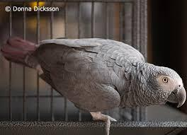

The African grey parrot's ability to talk and mimic sounds makes this medium-sized parrot
a captivating companion. African grey owners often report that their greys oftentimes talk
in context and seem very attuned to their people's emotions. The African grey parrot is also
known as “The Einsteins of the Bird World” because of their extreme intellegence.
The most popular and common is the Congo African grey it is the largest of the African grey parrots,
sporting a lighter gray color in its plumage, a solid black beak, and a brighter red tail.
The second most common type is the Timneh African grey is slightly smaller than the Congo,
and its feathers are darker in color, their tails are more of a burgenday red, and a
horn-colored upper mandible instead of a black one. African grey parrots are herbivores
and most of their diet consists of fruit, nuts, and seeds. They prefer oil palm fruit and will
also supplement their diet with flowers and tree bark, as well as insects and snails.